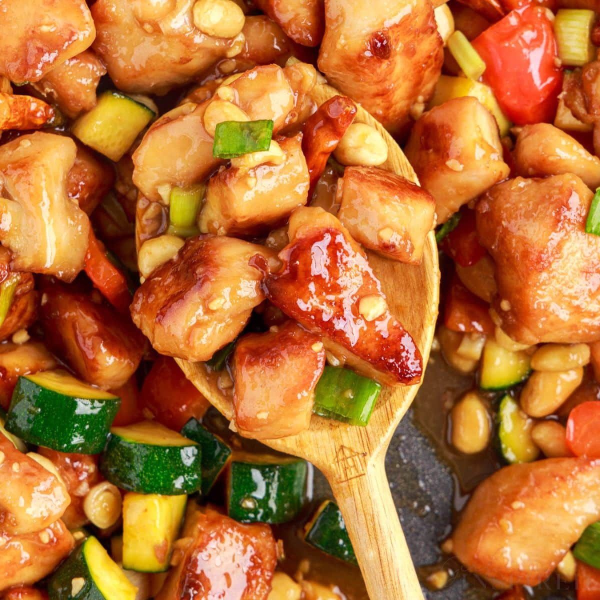

"Unveiling Flavors Through Time: The Epic Saga of Kung Pao Chicken"
Kung Pao Chicken, a classic Chinese dish, originates from the Sichuan province. It's named after Ding Baozhen, a Qing Dynasty official known as Kung Pao, who enjoyed this spicy dish. Traditional Kung Pao Chicken features diced chicken stir-fried with peanuts, chili peppers, and Sichuan peppercorns in a savory sauce. It gained international popularity in the 20th century, adapted to local tastes, and is now a staple of Chinese-American cuisine, known for its spicy, tangy, and nutty flavors.
"Bringing Kung Pao Chicken to your kitchen"
Here's a recipe for making Kung Pao Chicken, a flavorful and slightly spicy Chinese dish with tender chicken, peanuts, and a savory sauce:
Elevate Your Dish with Exceptional Ingredients
For the Marinade:
- 1 pound (450 grams) boneless, skinless chicken breast or thigh, cut into bite-sized cubes
- 1 tablespoon soy sauce
- 1 tablespoon Chinese rice wine (or dry sherry)
- 1 teaspoon cornstarch
For the Sauce:
- 2 tablespoons soy sauce
- 2 tablespoons Chinese black vinegar (or rice vinegar)
- 1 tablespoon hoisin sauce
- 1 tablespoon sugar
- 1 teaspoon cornstarch
For the Stir-Fry:
- 2 tablespoons vegetable oil
- 3-4 dried red chili peppers (adjust to your spice preference)
- 2 cloves garlic, minced
- 1-inch piece of ginger, minced
- 1/2 cup unsalted peanuts (roasted or raw)
- 2-3 green onions, chopped
- Optional: Sichuan peppercorns for added flavor (about 1/2 teaspoon)
Let's chop, simmer, and sauté our way to gastronomic glory!
Marinate the Chicken:
1. In a bowl, combine the chicken cubes with 1 tablespoon soy sauce, 1 tablespoon Chinese rice wine (or sherry), and 1 teaspoon cornstarch. Mix well and let it marinate for about 15-20 minutes.
Prepare the Sauce:
1. In another bowl, mix together 2 tablespoons soy sauce, 2 tablespoons Chinese black vinegar (or rice vinegar), 1 tablespoon hoisin sauce, 1 tablespoon sugar, and 1 teaspoon cornstarch. Stir until well combined. Set aside.
Stir-Fry the Chicken:
1. Heat 2 tablespoons of vegetable oil in a wok or large skillet over high heat.
2. Add the dried red chili peppers and stir-fry for about 30 seconds until they become fragrant. If you like it spicier, you can break the peppers to release more heat.
3. Add the marinated chicken to the wok. Stir-fry for 4-5 minutes or until the chicken is cooked through and slightly browned. Remove the chicken from the wok and set it aside.
Finish the Dish:
1. In the same wok, add a bit more oil if needed.
2. Add minced garlic and ginger, and optional Sichuan peppercorns if desired. Stir-fry for about 30 seconds until aromatic.
3. Return the cooked chicken to the wok and stir to combine with the garlic and ginger.
4. Pour the prepared sauce over the chicken and stir-fry for another 2-3 minutes until the sauce thickens and coats the chicken evenly.
5. Add the unsalted peanuts and stir-fry for an additional 1-2 minutes until they are heated through and slightly crispy.
6. Remove the wok from the heat, stir in the chopped green onions, and give it a final toss.
Serve:
1. Serve your homemade Kung Pao Chicken hot over steamed rice.
2. Enjoy the delicious and flavorful combination of tender chicken, crunchy peanuts, and the savory-spicy sauce!
Feel free to adjust the spice level by adding more or fewer dried red chili peppers.